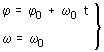
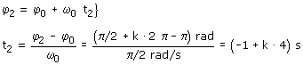
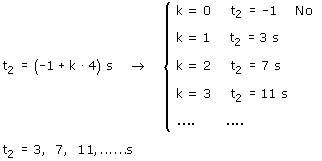

b)
Ecuaciones del movimiento:
|
|
 |
Parámetros: ω0 = 15 r.p.m = π/2 rad/s T = 2·π/ω0 = 4 s |

Aplicación:
Datos: φ2 = (π/2 + k·2π) rad , Incógnita: t2
 |
 |

La solución negativa indica que en la vuelta k = 0 no pasa por la posición 90º (Porque el móvil empieza en la posición 180º y gira en sentido contrario a las agujas del reloj)